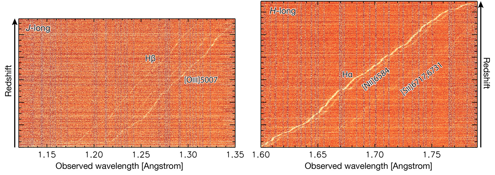
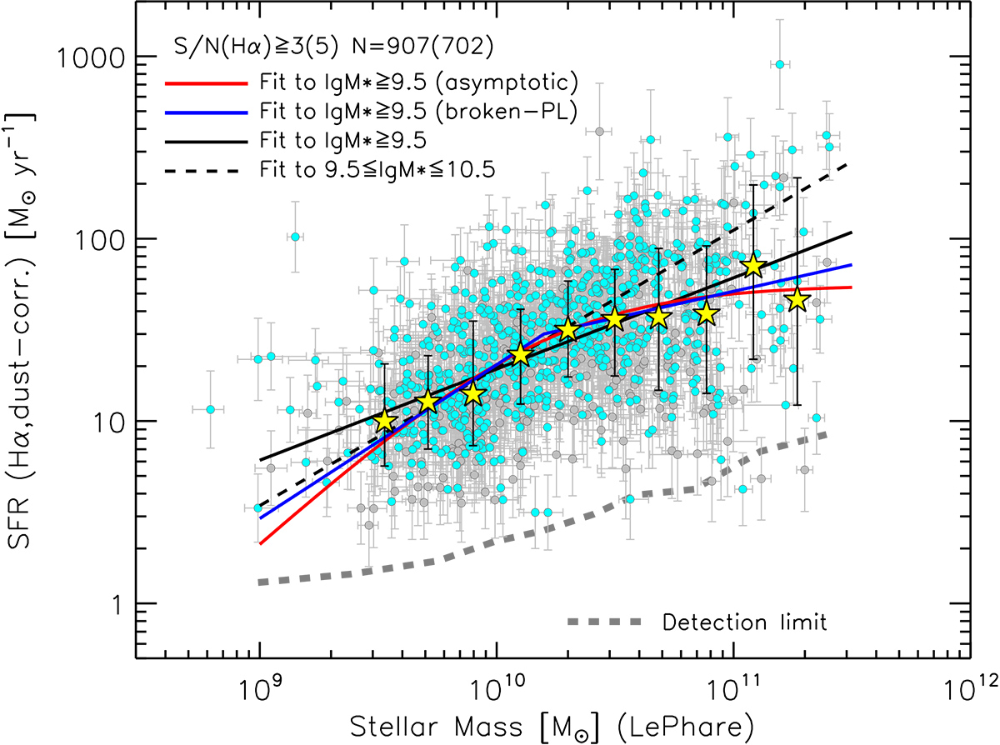
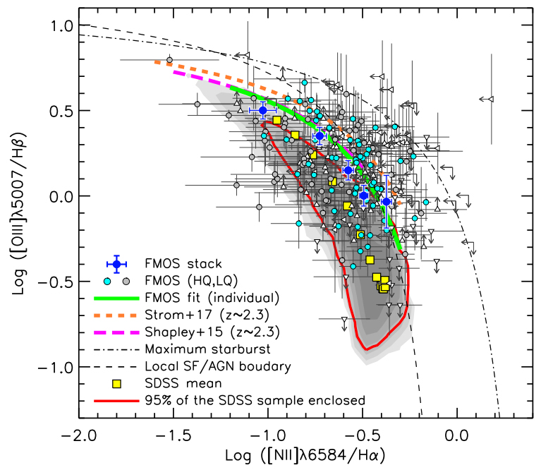
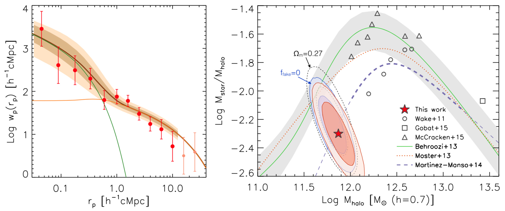
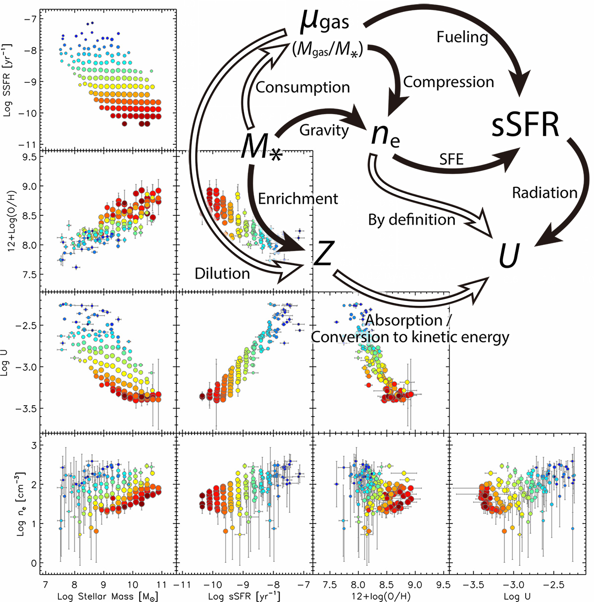

Research
My research interests forcus on the evolution and formation of galaxies and the growth of cosmic large scale structures of dark and baryonic matter. My publication list can be found from ADS here, or the Publications page. The collaborative projects and research highlights are included below.
Exploring the Epoch of Reionization (under construction)
Nature of dust in galaxies at z~1.6 (under construction)
- Hα-based star formation rate and main-sequence of star-forming galaxies
- Ionization/excitation state of star-forming HII regions
- Dark matter halos containing star-forming galaxies at z~1.6
Disentangling the physical parameters on ionized gas and galaxies
Exploring the Epoch of Reionization
{kind=link}
Nature of dust in star-forming galaxies at z~1.6
The FMOS-COSMOS survey
Go to the FMOS-COSMOS webpage where you can get public catalogs and reduced spectra. We are very happy if you would make use of our data. Please do not hesitate to email me any questions about the FMOS-COSMOS products.
The FMOS-COSMOS is a large, wide-field near-infrared spectroscopic survey of star-forming galaxies across comic time between redshift 0.7 and 2.5. The survey was carried out using the Fiber Multi-Object Spectrograph (FMOS) mounted on the Subaru telescope. The sample include populations of star-forming galaxies across the star-forming main sequence at 1.4< z< 1.7, infrared luminous galaxies, and X-ray-emitting galaxies. The latest galaxy catalog contains ~1900 spectroscopic redshifts and fluxes of the rest-frame optical emission lines, e.g., Hβ, [OIII]λ5007, Hα, [NII]λ6584. Further descriptions and public data can be found at the FMOS-COSMOS webpage. The survey design and observations are described in Silverman et al. 2015, ApJS, and the latest catalog and summary of the basic properties of the sample are given in Kashino et al. 2019, ApJS.
{kind=link}
Hα-based star formation rate and main-sequence of star-forming galaxies
{kind=link}
We established the so-called star-forming main-sequence at z~1.6 using the FMOS-COSMOS galaxy sample. The intrinsic star formation rate (SFR) are estimated from dust-corrected Hα fluxes. The results show elevated SFRs relative to local galaxies and a hint of "bending" at high masses. Our findings are published in Kashino et al. 2013 and Kashino et al. 2019, ApJS.
Ionization/excitation state of star-forming HII regions
{kind=link}
We investigated the physical conditions of the ionized gas in star-forming galaxies using emission-line flux ratio. We found that metallic ions are more highly ionized in our FMOS-COSMOS sample relative to local galaxies. Based on comparisons to theoretical models, we argue that the changes in the ionization states are caused by a higher ionization parameter both at fixed stellar mass and metallicity in high-z galaxies. Our findings are published in Kashino et al. 2017, ApJ, 835, 88 and Kashino et al. 2019, ApJS. The physical conditions of the ionized gas are also investigated in Kashino & Inoue, 2019, MNRAS (see below).
Dark matter halos containing star-forming galaxies at z~1.6
{kind=link}
We measured the projected correlation function of star-forming galaxies at z~1.6 based on spectroscopic redshifts. With an HOD modeling, we found that the sample galaxies reside in halos with Mhalo~5 × 1012Msun on average and constrained the stellar mass to halo mass ratio (SHMR). Our findings are published in Kashino et al. 2017, ApJ, 843, 138.
Disentangling the physical parameters on ionized gas and galaxies 
{kind=link}
We aimed to disentangle the connection between phsyical quantities that characterize the conditions of ionized HII regions (metallicity, ionization parameter, and electron density), and the global stellar mass and star formation rate of the host galaxie. We constructed composite spectra and estimated metallicity using the direct method based on the detection of the oxygen auroral lines, i.e., [OIII]λ4363 and/or [OII]λλ7320,7330. We found that the ionization parameter is primarily controlled by sSFR, but also depends significantly on metallicity and ne. Our findings will be published in Kashino & Inoue, 2019, MNRAS, 486, 1053, together with a catalog containing the mission-line ratios and the physical quantities.